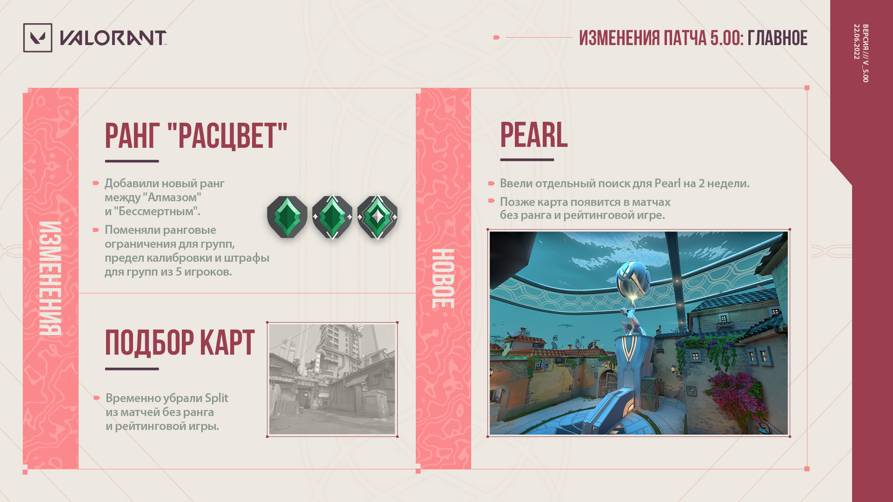

ИЗМЕНЕНИЯ КАРТ

PEARL
- НОВАЯ КАРТА: в игре появляется Pearl!
- Отдельный поиск матчей на Pearl
- Первое время на Pearl можно будет играть только в обычном режиме без ранга. Это позволит игрокам изучить новую карту до того, как мы включим ее в перечень карт рейтинговой игры.
- Отдельный поиск матчей на Pearl будет доступен в течение 2 недель, после чего новая карта появится в рейтинговой игре.
SPLIT
- Карты Split некоторsое время не будет в играх без ранга и в соревновательном режиме.
- И на то есть причины! Узнать больше о нашем решении можно в статье об обновлении набора карт.
ИЗМЕНЕНИЯ РЕЙТИНГОВОЙ СИСТЕМЫ
НОВЫЙ РАНГ "РАСЦВЕТ"
Между "Алмазом" и "Бессмертным" теперь есть еще один ранг под названием "Расцвет". На наш взгляд, в низких рангах, особенно в "Бронзе" и "Серебре", слишком много игроков. Изучив ранговое распределение, мы поняли, что если переместить некоторых из вас в ранги повыше, то слишком много игроков будет уже в "Платине" и "Алмазе". Таким образом, новый ранг поможет равномернее распределить игроков, сохранить престиж высоких рангов и сделать границы между уровнями мастерства для каждого ранга четче. В связи с этим для всех рангов ниже "Расцвета" меняются целевые значения MMR, определяющие понижение ранга. Целевые значения для "Бессмертного" (1, 2 и 3) и "Радианта" стали выше. Это те самые значения MMR, при которых можно достичь определенного ранга. Целевые значения MMR определяют ваш РРИ и помогают получить ранг, соответствующий вашему MMR. Данное изменение приведет к тому, что ранг всех игроков ниже "Расцвета" повысится. Мы считаем, что высокий ранг нужно заслужить, поэтому игрокам ранга "Бессмертный" и выше теперь будет сложнее достичь своего прошлого ранга из предыдущего эпизода. Кроме того, во всех регионах в таблице лидеров станет меньше игроков ранга "Бессмертный". Из-за сезонного сброса рангов в начале эпизода ваш ранг может не повыситься, пока вы не подтвердите свое мастерство, но этот сброс будет менее значительным по сравнению с началом прошлого эпизода. Поскольку часть игроков перемещается в ранг "Расцвет", сброс не сильно повлияет на ваш текущий ранг. Возможно, при следующем сбросе рангов вы окажетесь ниже, чем в начале этого эпизода. Не забывайте, что "щадящий" сброс будет только в начале этого эпизода из-за добавления ранга "Расцвет". Разница рангов в группе с обладателем ранга "Расцвет" не должна превышать 3 ранга. Эти ограничения соответствуют действующему правилу для "Платины" и рангов выше. Теперь самый высокий ранг, который можно получить в результате калибровки, – "Расцвет 1" (а не "Алмаз 1", как раньше). Теперь получение и потеря РРИ уменьшаются на 25% в группах из 5 игроков, где есть обладатель ранга "Бессмертный 1" или выше (а не "Алмаз 3" или выше). Теперь обладатели ранга "Бессмертный 1" или выше (а не "Алмаз 3" или выше) могут играть только в одиночку, вдвоем или в группе из 5 человек. Как вы помните, раньше игроки ранга "Алмаз 3" и выше могли играть только в одиночку, вдвоем или впятером. Теперь это ограничение начинается с ранга "Бессмертный 1". После появления нового ранга штрафы к группе из 5 игроков и ограничения на количество игроков в группе будут начинаться с ранга "Бессмертный". Система рангов станет более логичной: так как самый низкий ранг в таблице лидеров – "Бессмертный 1", к игрокам будут предъявляться более строгие требования, если они хотят занять в ней свое место. Из-за путаницы в англоязычных названиях после добавления нового ранга мы изменили звание за достижение 8-го уровня контракта Sage. Теперь оно называется "Бесстрашный". Нам очень не хотелось менять звание, но мы подумали и решили воспользоваться шансом выбрать что-то более подходящее для Sage с точки зрения ее истории и характера.ИСПРАВЛЕНИЕ ОШИБОК
КАРТЫ
- Исправлена ошибка, из-за которой игроки не могли использовать граффити на стене в саду A на карте Haven
- Спасибо @eminakob за обнаружение этой ошибки!
АГЕНТЫ
- Исправлена ошибка, из-за которой Jett могла использовать оружие во время "Попутного ветра".
- Исправлена ошибка, из-за которой агенты, обнаруженные "Разведстрелой" Sova или "Призраком" Fade, иногда в течение короткого времени отображались в неправильном месте на мини-карте.
- Исправлена ошибка, из-за которой при прицеливании из оружия Chamber во время действия умения "Демонстрация силы" визуальный эффект прицела иногда исчезал.
ИГРОВЫЕ СИСТЕМЫ
- Исправлена ошибка, из-за которой при использовании сферы абсолютного умения или обезвреживании Spike на максимальном расстоянии анимации этих действий и шкалы прогресса иногда начинали мерцать.
- Исправлена ошибка, из-за которой шкала прогресса использования объекта не обновлялась, если игрок отключался и снова подключался к сети во время матча.
- Исправлена ошибка, из-за которой анимация выбора некоторых видов оружия иногда воспроизводилась с неправильной скоростью и было непонятно, когда можно начать стрелять. Эта ошибка затрагивала следующие действия:
- выход Cypher из режима "Камеры";
- сбор сфер абсолютного умения;
- отмена или завершение установки Spike.